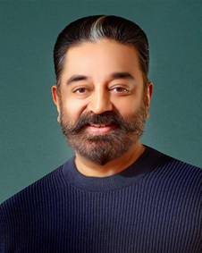
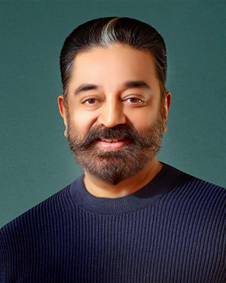
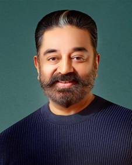

KAMAL HAASSAN
Actor | Director | Singer | Dancer | Producer | Politician
 

Actor | Director | Singer | Dancer | Producer | Politician

Kamal Haasan (born Parthasarathy Srinivasan on 7 November 1954) is an Indian actor, film director, film producer, screenwriter, choreographer, playback singer, lyricist, television presenter, social activist and politician who works mainly in Tamil cinema. Besides Tamil, he has also appeared in some Malayalam, Hindi, Telugu, Kannada and Bengali films. Considered as one of the finest actors in Indian cinema, Haasan is also known for introducing many new film technologies and film making techniques to the Indian film industry. He has won numerous accolades, including Four National Film Awards, Nine Tamil Nadu State Film Awards, Four Nandi Awards, One Rashtrapati Award, Two Filmfare Awards and 17 Filmfare Awards South. He was awarded the Kalaimamani Award in 1984, the Padma Shri in 1990, the Padma Bhushan in 2014 and the Ordre des Arts et des Lettres (Chevalier) in 2016. Haasan started his career as a child artist in the 1960 Tamil film Kalathur Kannamma for which he won a President's Gold Medal. After a sabbatical, he received his breakthrough with the 1975 drama Apoorva Raagangal, directed by K. Balachander, in which he played a rebellious youth who falls in love with an older woman which earned him his first Filmfare Award.